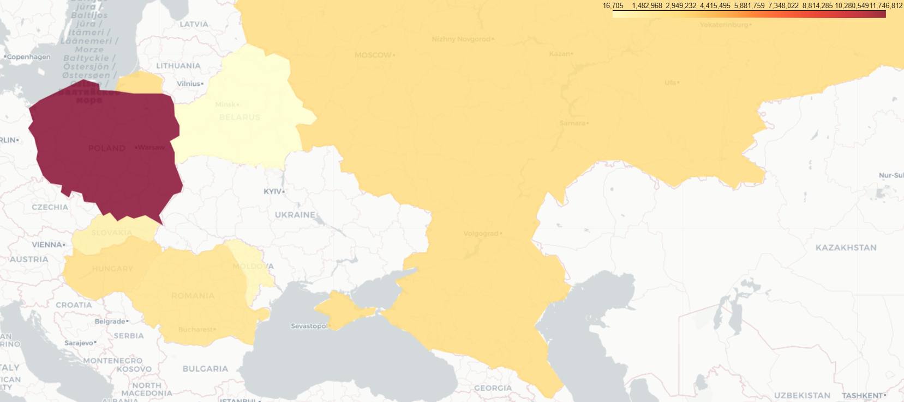

Il 24 febbraio 2022 iniziava la prima guerra simmetrica in Europa dopo la Seconda Guerra Mondiale: la guerra in Ucraina. Protagonista assoluta delle cronache nell’ultimo anno e mezzo, è uno dei grandi spartiacque della storia di questo secolo. Ma questa è anche una guerra di mezzi e risorse oltre che di uomini. E molti ne stanno venendo usati in Ucraina vestendo un ruolo fondamentale e centrale.
Nel grafico sottostante si può constatare il computo, stimato tramite fotografie geolocalizzate nei luoghi di combattimento, del numero di mezzi leggeri e pesanti persi da russi e ucraini.
Fonte: Oryx
I dati che questo articolo si propone di analizzare e commentare si fermano al 22 maggio 2023, in corrispondenza con la fine della battaglia di Bakhmut, terminata dopo oltre 8 mesi con la vittoria russa.
Sia la Federazione Russa sia l’Ucraina sono ex membri dell’Unione Sovietica. Entrambe ne hanno ereditato parte dell’arsenale militare. Infatti i mezzi di fabbricazione sovietica costituiscono la maggior parte dei veicoli geolocalizzati da osservatori indipendenti, perduti da entrambe le fazioni. A questi si aggiungono, rispettivamente, i mezzi di fabbricazione russa post-sovietici e quelli occidentali forniti dai loro sostenitori agli ucraini durante il conflitto.
Il numero totale di mezzi persi dai russi rispetto agli ucraini si avvicina ad un rateo di 3 a 1, a comprova di una performance dell’esercito russo nettamente al di sotto di quanto il mondo si sarebbe aspettato..
Il numero di mezzi occidentali dati agli ucraini sono quelli più interessanti da valutare per quanto riguarda questo schieramento, poiché costituiscono le uniche unità di mezzi rimpiazzabili, anche se la loro fornitura avviene in numeri relativamente piccoli e abbastanza a rilento. A partire dalla primavera 2022, il numero di mezzi occidentali persi ammonta a 2912 unità. Le perdite di questo equipaggiamento si concentrano perlopiù in mezzi leggeri, un tipo di perdita normale in un contesto di guerra. Raggiungono, tuttavia, numeri impressionanti alcune voci dell’equipaggiamento pesante, in particolare le artiglierie pesanti da 155 mm M777 di fabbricazione americana, che hanno avuto un totale di perdite pari a ben 157 unità a fronte delle circa 300 fornite. Ciò sta a significare una scarsa efficacia o un utilizzo strategico non adeguato da parte di Kiev.
Ma è l’aviazione che, secondo i dati raccolti, costituisce il vero tallone d’Achille per gli ucraini. Infatti, essi hanno perso ben 26 MiG-29, ovvero i caccia più moderni in dotazione, di fabbricazione sovietica, su 80 stimati nei numeri anteguerra. Anche se potrebbe sembrare un numero di perdite non troppo elevato a un primo sguardo, sostituire un caccia perso nelle operazioni militari costituisce al momento, per via della complessità del mezzo rispetto ad altri come carri armati e artiglierie, un tipo di perdita impossibile da rimpiazzare per gli ucraini. Pertanto, essendo i caccia elementi fondamentali per la conduzione con successo di nuove offensive, essi saranno, una volta sciolti i complicati nodi politici ad essi relativi, il punto di maggior sforzo occidentale nelle forniture.
L’aviazione russa, per contro, è una delle voci con le perdite minori rispetto alle disponibilità russe di anteguerra. Le maggiori perdite si sono avute in particolare in termini di elicotteri, specie all’inizio delle operazioni militari, cosa che ha spinto i russi ad utilizzare con cautela i loro elicotteri e caccia.
L’esito di questa guerra è ancora lontano dall’essere deciso, ma solo stimando che il 50% degli equipaggi di questi mezzi distrutti sia caduto, arriveremmo in termini matematici e con una stima ancora ottimistica per la verità, alla cifra impressionante di almeno 40000 morti. Numero purtroppo destinato solamente a salire.
La guerra mostra la sua tragica faccia anche nelle sofferenze della popolazione civile. È ormai da febbraio 2022 che le sirene antiaeree risuonano nelle città ucraine senza sosta, portando con sé un senso di paura e di imminente pericolo. È da febbraio 2022 che la partenza degli uomini verso il fronte ha scoinvolto le dinamiche famigliari, spazzando via la normale quotidianità. A combattere, e quindi a morire, sono soprattutto loro: padri e figli.
Donne, bambini ed anziani invece fanno parte di quella grande onda umana che ha attraversato l’Europa in cerca di rifugio e protezione. Un flusso migratorio di proporzioni straordinarie, senza precedenti dalla fine della Seconda Guerra Mondiale in Europa, che ha avuto un impatto significativo specialmente sui paesi dell’Europa dell’Est.
Fonte: UNHCR
I dati riportati dall’UNHCR (Alto Commissariato delle Nazioni Unite per i rifugiati) mettono ben in evidenza le dimensioni di questo evento: circa 20 milioni di ucraini hanno attraverso i confini di paesi come Polonia, Ungheria, Moldavia, Romania o Slovacchia, molto spesso come meta transitoria nel loro percorso verso l’Europa occidentale. Numeri considerevoli, certo, ma non sorprendenti dal punto di vista geopolitico. Parliamo infatti di paesi che hanno stretti legami e una relativa vicinanza con l’Ucraina.
Quello che balza all’occhio, se contestualizzati, sono invece i numeri che riguardano i rifugiati verso la Russia. Come mai, vista l’escalation in atto e le relazioni a dir poco tese (per usare un eufemismo) tra i due paesi, quasi tre milioni di ucraini avrebbero scelto di varcare il confine russo? Prima di andare ad analizzare più nel dettaglio la situazione, è importante precisare che le informazioni riguardanti la Russia si riferiscono a dati disponibili fino al 31 dicembre 2022, poiché non sono stati forniti ulteriori aggiornamenti. Ma ciò non toglie la rilevanza del fenomeno.
In un recente rapporto pubblicato da Amnesty International, le accuse alle autorità russe sono gravi e indicano la presenza di crimini di guerra e possibili crimini contro l’umanità nella guerra in corso in Ucraina. Nel rapporto viene messo in luce il fatto che le forze russe abbiano trasferito civili in maniera coatta dalle zone occupate dell’Ucraina verso la Russia o verso territori ucraini sotto il controllo russo. Inoltre, Amnesty International denuncia la separazione di minori dalle loro famiglie e durante queste operazioni: una grave violazione del diritto internazionale umanitario.
All’inizio di marzo 2022, Mariupol è stata presa di mira dalle forze russe, diventando una tragica zona di assedio. I bombardamenti incessanti hanno lasciato la città senza acqua, riscaldamento ed elettricità, costringendo i residenti a vivere in condizioni disumane e insostenibili. Dopo giorni di intensi sforzi, alcune migliaia di civili sono finalmente riusciti a fuggire da Mariupol, cercando rifugio nelle zone controllate dal governo. Tuttavia, la fuga si è rivelata ancora più ardua, poiché le forze russe hanno iniziato a costringere alcune persone a rimanere in città, tagliando ogni possibile via di fuga. Molti si sono trovati intrappolati, privati della libertà di scegliere il proprio destino, e costretti ad accettare una difficile decisione: trasferirsi contro la loro volontà nella Repubblica Popolare di Donetsk (RpD) o cercare rifugio in Russia.
Insomma, una maggiore consapevolezza riguardo alla crisi in Ucraina e alle sue conseguenze umanitarie può aiutare a mobilitare ulteriore supporto e solidarietà verso chi sta vivendo una situazione così difficile. Non solo semplici numeri, ma soprattutto persone.